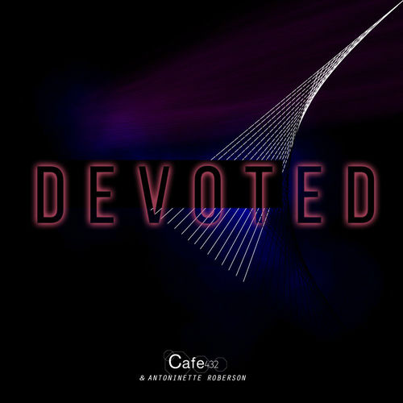

Antoinette Roberson
Antoinette Roberson is an American songwriter, record producer, and vocalist known for her work in R&B and hip-hop during the late 1990s and early 2000s. She co-wrote the Grammy-nominated single "What's It Gonna Be?!" by Busta Rhymes featuring Janet Jackson (1999) and the platinum-certified single "My Body" by the R&B supergroup LSG (1997), which reached number one on the Billboard Hot R&B/Hip-Hop chart for seven weeks.
Complete Discography & Tracklists (6)
2013 Be Free 🎵 0 Tracks
No tracks registered.
2021 Love of My Life 🎵 0 Tracks
No tracks registered.